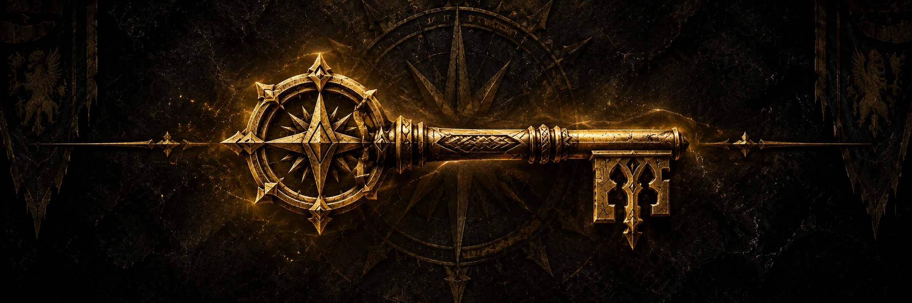

ATTUNEMENTS
& KEYS
Dungeon keys and raid attunements can save long runs, unlock important content, and in some cases are required before you can enter at all. Start with the lower-level dungeon keys and work your way toward endgame raid access.
GET ATTUNE ADD-ONACCESS GUIDE
Select a key or attunement to see where to start, the required steps, and whether you need to keep it.
DUNGEON KEYS
RAID ATTUNEMENTS
AQ40:
Temple of Ahn'Qiraj does not require a normal personal raid attunement.
The Scepter of the Shifting Sands was part of opening the raid gates,
not a permanent individual entry requirement.